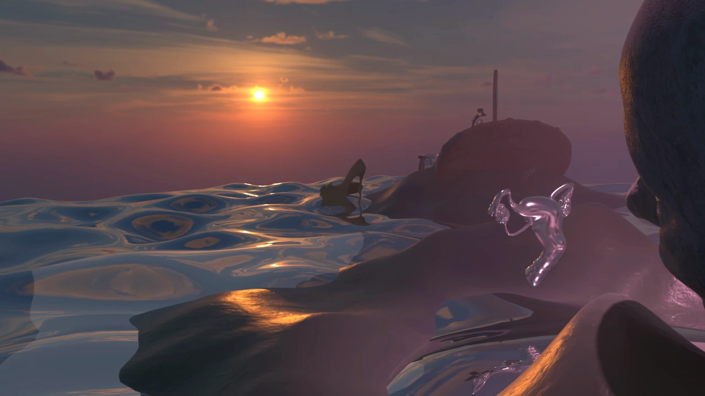

01 / THE BODY
The unheard experience
I grew up surrounded by women, and from an early age, I witnessed the physical and emotional difficulties associated with menopause. Hot flashes, insomnia, fatigue, and emotional fluctuations were often endured in silence, with many believing that this was simply a natural burden they had to accept. What affected me most was not only their discomfort, but how easily it was dismissed. Physiological changes were frequently misunderstood as personality problems, leaving many women feeling unseen and unsupported.
01
THE BODY